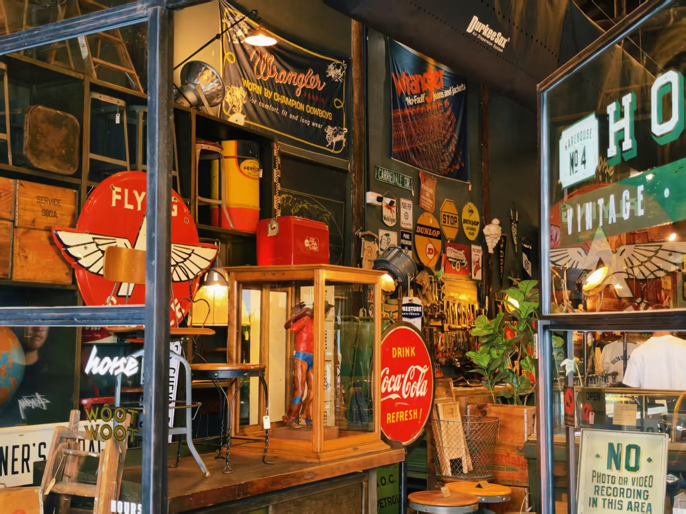
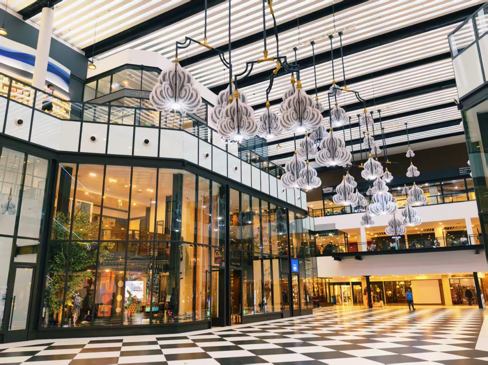
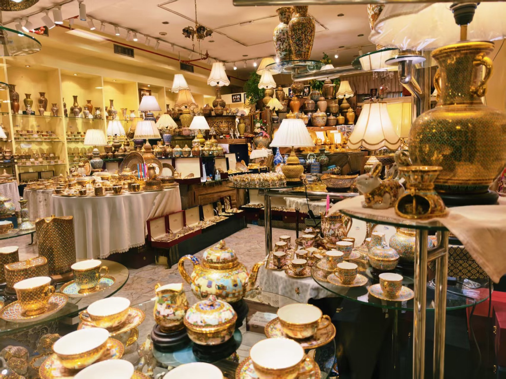
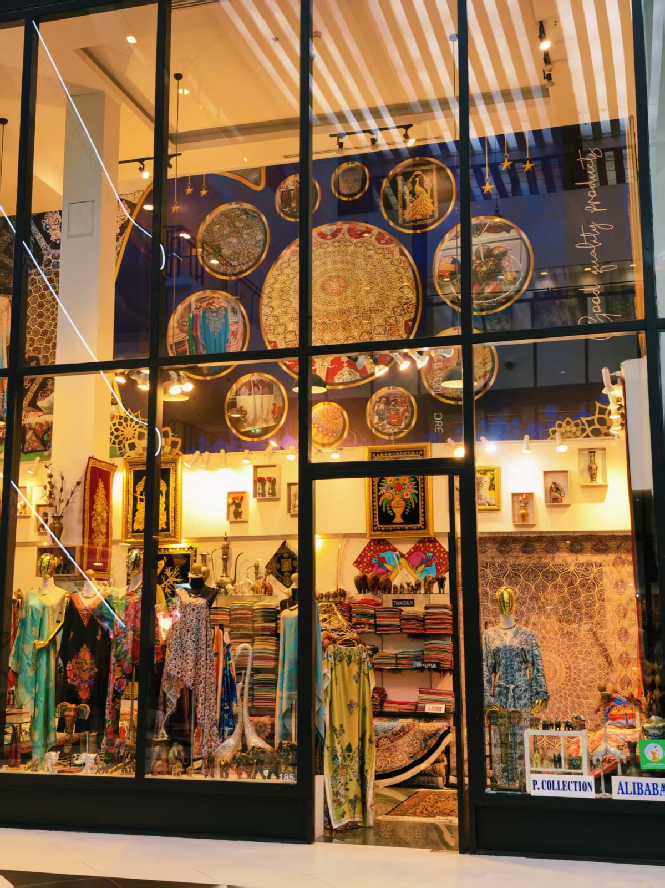
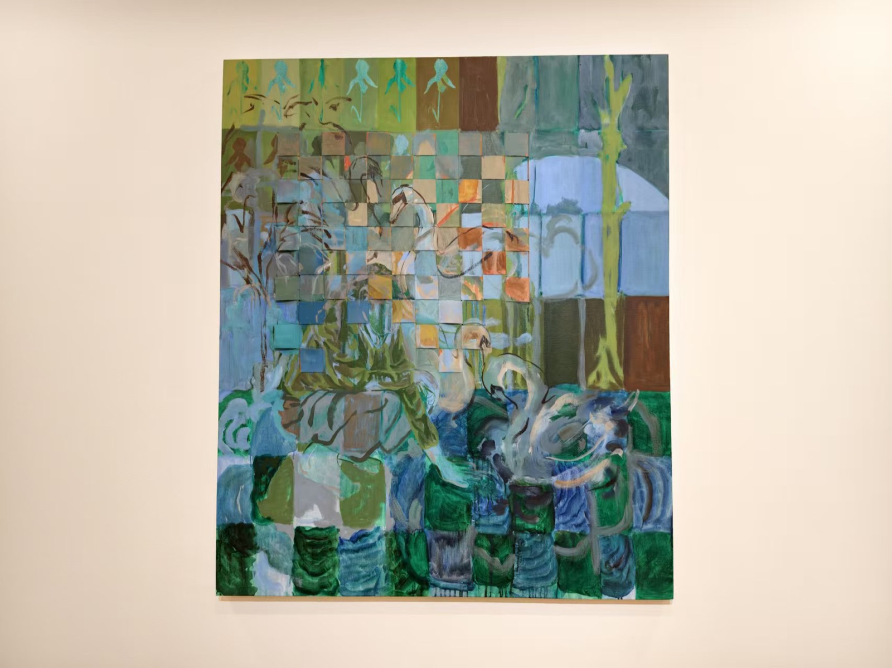

石龙军路
这天去了石龙军路上的 Warehouse 30 和 River City，一个是旧仓库改成的文创园，一个是河边的艺术品和古董商场。
Warehouse 30 的外墙上有一整面涂鸦，已经有些斑驳。园区里开着画廊和各种小店，街区很有艺术氛围。

有一家店卖中古的小玩意，旧招牌、灯具、海报和杂货摆得到处都是。店里不让拍照，只能在门口看看。这张照片就是从外面拍的。

接着去了 River City。外立面是大面积玻璃，上面写着「The Anchor of Arts and Antiques」。中庭很开阔，地面铺成黑白格，成排的吊灯从楼顶垂下来，楼上都是画廊和商铺。


店里的东西很杂：描金瓷器、台灯、织物、衣服，还有各种尺寸的佛像。瓷器店从桌面到架子都摆得满满的，织物店则把圆形织物挂满了整面墙。


经过一家佛像店时，两个店员正坐在地上，把一尊佛像用气泡膜层层裹好，再装进纸箱。周围的架子上还摆满了佛像。

楼里还有展览，我最喜欢这一幅。画面分成很多小格，蓝色和绿色叠在一起，里面隐约有树和人的形状。我说不出太多门道，只是单纯觉得好看。
